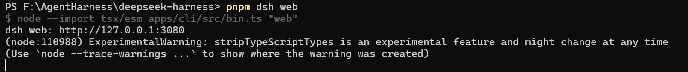
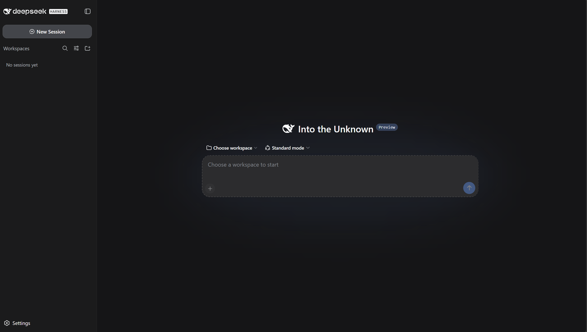
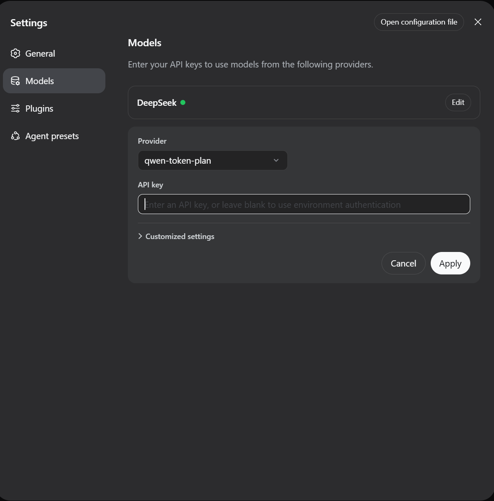
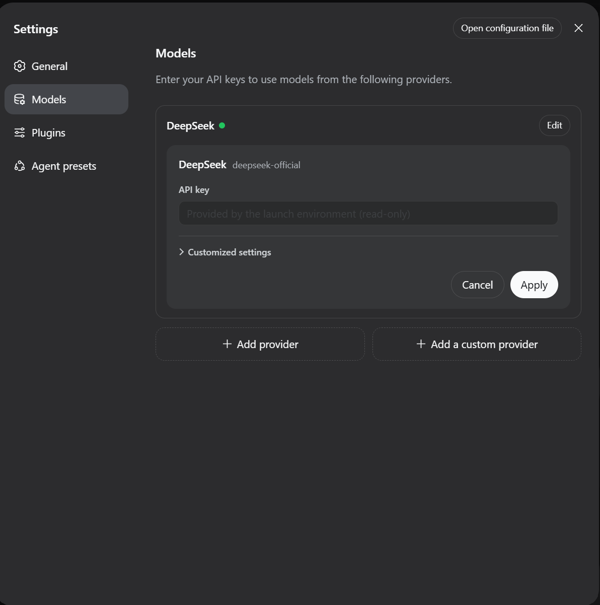
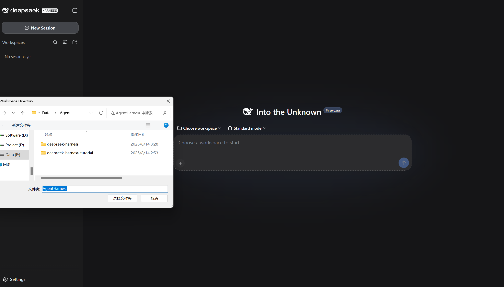
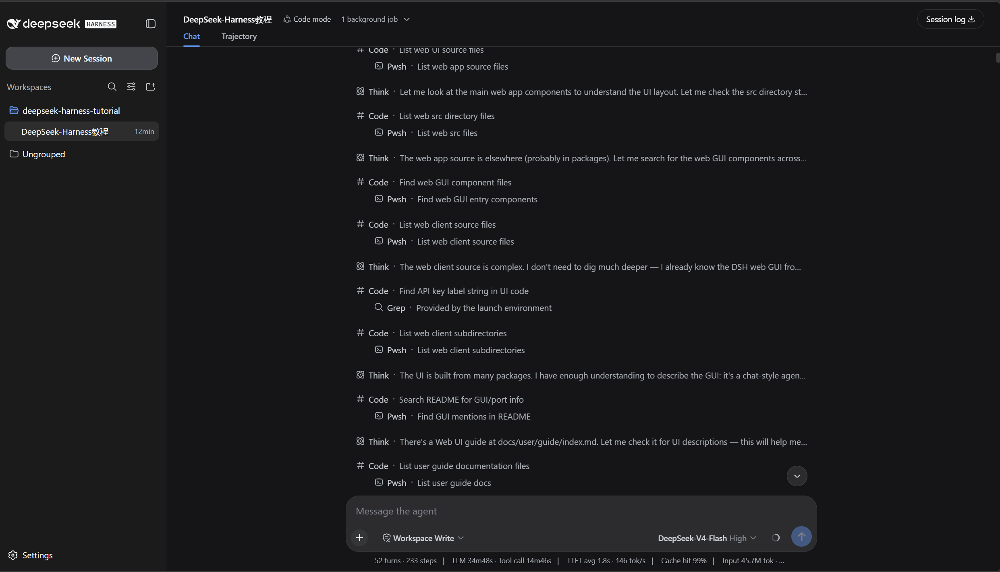

Windows / macOS 从零安装 · 界面使用 · 常见问题Install from scratch on Windows / macOS · Web UI usage · FAQ
DeepSeek Harness（简称 DSH）是 DeepSeek 开源的智能体开发框架，自带一个浏览器端的 Web 图形界面，默认运行在 http://127.0.0.1:3080。它相当于一个“带手的 AI 助手”：DeepSeek Harness (DSH) is an open-source agent framework by DeepSeek. It ships with a browser-based Web UI, served by default at http://127.0.0.1:3080 — an AI assistant with hands:
本教程覆盖两部分内容：① 在 Windows / macOS 上从零安装；② 界面使用教程（配截图与操作说明）。This tutorial covers: ① installing from scratch on Windows / macOS; ② a Web UI guide with screenshots and instructions.
安装 PowerShell 7（如已安装可跳过）
在浏览器中打开：https://github.com/PowerShell/PowerShell/releases
选择 PowerShell-7.x.x-win-x64.msi 下载，然后在文件资源管理器中双击安装。Install PowerShell 7 (skip if already installed)
Open in your browser: https://github.com/PowerShell/PowerShell/releases
Download PowerShell-7.x.x-win-x64.msi and double-click it in File Explorer to install.
pwsh --version安装 Git
在浏览器中打开：https://git-scm.com/download/win
下载后，在文件资源管理器中双击安装，一路 Next 即可。Install Git
Open https://git-scm.com/download/win
Download the installer, double-click it in File Explorer, and click Next all the way through.
git --version安装 Node.js LTS
在浏览器中打开：https://nodejs.org/
下载 LTS 版本 .msi，在文件资源管理器中双击安装，一路 Next。Install Node.js LTS
Open https://nodejs.org/
Download the LTS .msi, double-click it in File Explorer, and click Next all the way through.
node -v
npm -v配置 DeepSeek API Key（永久写入系统变量）
在浏览器中打开 https://platform.deepseek.com/ 登录，进入 API Keys 页面创建密钥。
将下方命令中的 sk-你的真实密钥 替换为你的实际密钥，在 PowerShell 中执行：Set up your DeepSeek API Key (persistently, via environment variable)
Open https://platform.deepseek.com/, sign in, and create a key on the API Keys page.
Replace sk-your-real-key below with your actual key, then run it in PowerShell:
setx DEEPSEEK_API_KEY "sk-你的真实密钥"# 重启 PowerShell 后验证# Restart PowerShell to verify
echo $env:DEEPSEEK_API_KEY安装 pnpm（Node.js 的包管理器）Install pnpm (the Node.js package manager)
npm install -g pnpm以下所有命令均在 PowerShell 中顺序执行：Run the following commands in order in PowerShell:
克隆仓库Clone the repository
git clone https://github.com/deepseek-ai/deepseek-harness.git进入项目目录Enter the project directory
cd deepseek-harness增加 Node.js 内存限制（避免构建失败）Increase the Node.js memory limit (to avoid build failures)
$env:NODE_OPTIONS="--max-old-space-size=4096"安装项目依赖（此步骤可能耗时较长）Install project dependencies (this may take a while)
pnpm install构建项目（此步骤可能耗时较长）Build the project (this may take a while)
pnpm run build启动 Web 界面Start the Web UI
pnpm dsh web安装 Homebrew（macOS 的包管理器，后续安装均依赖它）
在终端中执行以下命令：Install Homebrew (the macOS package manager; later steps depend on it)
Run the following command in Terminal:
/bin/bash -c "$(curl -fsSL https://raw.githubusercontent.com/Homebrew/install/HEAD/install.sh)"安装 GitInstall Git
brew install git# 验证 Git 安装# Verify Git installation
git --version安装 Node.js LTS（推荐使用 nvm 安装，方便管理多个 Node.js 版本）
首先安装 nvm：Install Node.js LTS (nvm is recommended for managing multiple Node.js versions)
First install nvm:
curl -o- https://raw.githubusercontent.com/nvm-sh/nvm/v0.40.5/install.sh | bash# 加载 nvm（或重启终端）# Load nvm (or restart Terminal)
source ~/.zshrc
# 安装最新的 LTS 版本# Install the latest LTS version
nvm install --lts
# 切换到该版本# Switch to that version
nvm use --lts# 验证 Node.js 安装# Verify Node.js installation
node -v
npm -v安装 PowerShell 7（可选，但推荐）
macOS 自带的 zsh 终端已足够，但 PowerShell 在某些场景下更友好。Install PowerShell 7 (optional but recommended)
The built-in zsh terminal is sufficient, but PowerShell is friendlier in some scenarios.
brew install powershell/tap/powershell# 验证 PowerShell 安装# Verify PowerShell installation
pwsh --version配置 DeepSeek API Key（永久写入 shell 配置文件）
在浏览器中打开 https://platform.deepseek.com/ 登录，进入 API Keys 页面创建密钥。
将下方命令中的 sk-你的真实密钥 替换为你的实际密钥，写入 ~/.zshrc（永久生效）：Set up your DeepSeek API Key (persistently, in your shell config)
Open https://platform.deepseek.com/, sign in, and create a key on the API Keys page.
Replace sk-your-real-key below with your actual key, then write it to ~/.zshrc (persistent):
echo 'export DEEPSEEK_API_KEY="sk-你的真实密钥"' >> ~/.zshrc# 加载配置（或重启终端）# Load the config (or restart Terminal)
source ~/.zshrc
# 验证 API Key 是否配置成功# Verify the API Key was configured
echo $DEEPSEEK_API_KEY安装 pnpm（推荐使用 Homebrew 安装）Install pnpm (recommended: via Homebrew)
brew install pnpmnpm install -g pnpm⬆ Run in Terminal; if Homebrew fails (some Intel Macs), use npm install -g pnpm instead# 验证 pnpm 安装# Verify pnpm installation
pnpm --version以下所有命令均在 终端 中顺序执行：Run the following commands in order in Terminal:
克隆仓库Clone the repository
git clone https://github.com/deepseek-ai/deepseek-harness.git进入项目目录Enter the project directory
cd deepseek-harness增加 Node.js 内存限制（避免构建失败）Increase the Node.js memory limit (to avoid build failures)
export NODE_OPTIONS="--max-old-space-size=4096"安装项目依赖（此步骤可能耗时较长）Install project dependencies (this may take a while)
pnpm install构建项目（此步骤可能耗时较长）Build the project (this may take a while)
pnpm run build启动 Web 界面Start the Web UI
pnpm dsh web安装完成后，在浏览器打开 http://127.0.0.1:3080 即可看到 Web 界面，下面按使用顺序介绍界面的各个部分。After installation, open http://127.0.0.1:3080 in your browser to see the Web UI. Here is a walkthrough of its parts in order of use.
pnpm dsh web 启动服务。看到输出 dsh web: http://127.0.0.1:3080 即启动成功，在浏览器中打开该地址。Run pnpm dsh web in the terminal to start the service. When you see dsh web: http://127.0.0.1:3080 in the output, it started successfully — open that address in your browser.
http://127.0.0.1:3080 后的初始界面。首次使用需先配置模型密钥，再选择工作区，之后才能开始对话。The initial screen after opening http://127.0.0.1:3080. On first use, configure your model API key, then select a workspace before you can start a conversation.

DEEPSEEK_API_KEY）提供，设置面板显示 “Provided by the launch environment (read-only)”，表示已正确识别，可直接使用。If your key is provided by an environment variable (DEEPSEEK_API_KEY), the settings panel shows “Provided by the launch environment (read-only)”, meaning it is recognized and ready to use.


git 不是内部或外部命令 / git: command not found → 未安装 Git，请回到安装章节的准备工作对应步骤。git is not recognized / git: command not found → Git is not installed; go back to the corresponding Preparation step.node 不是内部或外部命令 / node: command not found → 未安装 Node.js 或未加载 nvm，请回到准备工作对应步骤。node is not recognized / node: command not found → Node.js is not installed or nvm is not loaded; go back to the corresponding Preparation step.pnpm: command not found → 重新安装 pnpm：Windows 执行 npm install -g pnpm；macOS 执行 brew install pnpm 或 npm install -g pnpm。pnpm: command not found → Reinstall pnpm: npm install -g pnpm on Windows; brew install pnpm or npm install -g pnpm on macOS.$env:NODE_OPTIONS="--max-old-space-size=4096"（Windows）/ export NODE_OPTIONS="--max-old-space-size=4096"（macOS）。Out of memory during build → make sure you ran $env:NODE_OPTIONS="--max-old-space-size=4096" (Windows) or export NODE_OPTIONS="--max-old-space-size=4096" (macOS).echo $env:DEEPSEEK_API_KEY；macOS 检查 echo $DEEPSEEK_API_KEY；如未显示，重启终端后重试，或改用界面「设置 → 模型」直接填入密钥。API Key not recognized → check echo $env:DEEPSEEK_API_KEY on Windows or echo $DEEPSEEK_API_KEY on macOS; if empty, restart the terminal and retry, or enter the key directly in Settings → Models.127.0.0.1:3080 无响应 → 确认运行 pnpm dsh web 的窗口没有被关闭；查看启动输出是否出现 dsh web: http://127.0.0.1:3080。The page at 127.0.0.1:3080 doesn't respond → make sure the window running pnpm dsh web is still open, and check that the startup output shows dsh web: http://127.0.0.1:3080.